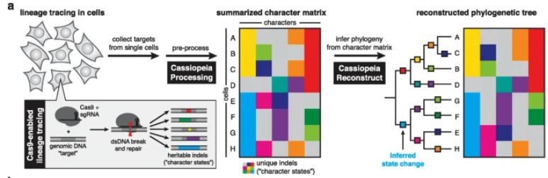
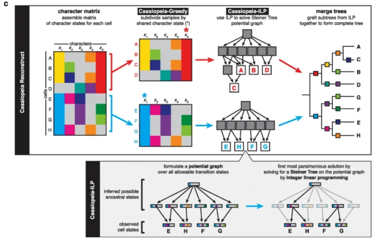

9 Single-cell lineage tracing
=======7 Single-cell lineage tracing
[]
>>>>>>> 84b7600d5159e099c748982f7f3d79cab9db2634 =======7 Single-cell lineage tracing
[]
>>>>>>> 84b7600d5159e099c748982f7f3d79cab9db26349.1 Why are we interested in learning temporal dynamics?
Studying how cells change over time provides critical insight into the sequence of events driving biological processes. By observing changes in cell populations across multiple time points, researchers can pinpoint when specific transitions or bifurcations occur. Such temporal information reveals which factors influence a cell’s fate and how quickly new traits emerge.
Moreover, understanding temporal dynamics can help us develop better interventions. If we can identify the earliest signs of disease or undesirable changes in cells, then targeted therapies can be designed to prevent or slow progression. Such strategies are especially powerful for complex, multi-stage diseases where later intervention might be less effective.
- Cancer subclone evolution: Tumors consist of various subclones that compete and evolve. Observing which subclones become dominant over time helps illuminate how certain cells acquire and propagate new mutations, sometimes conferring resistance to treatments. See Figure 9.1 and Figure 9.2. ======= ======= >>>>>>> 84b7600d5159e099c748982f7f3d79cab9db2634
- Cancer subclone evolution: Tumors consist of various subclones that compete and evolve. Observing which subclones become dominant over time helps illuminate how certain cells acquire and propagate new mutations, sometimes conferring resistance to treatments. See Figure 7.1 and Figure 7.2. <<<<<<< HEAD >>>>>>> 84b7600d5159e099c748982f7f3d79cab9db2634 ======= >>>>>>> 84b7600d5159e099c748982f7f3d79cab9db2634
- Cancer metastasis: Cells that detach from the primary tumor site and successfully colonize new tissues undergo significant genetic and phenotypic changes. Understanding these changes in temporal sequence highlights the adaptations needed for invasion and survival in distant environments. See Figure 9.3. =======
- Cancer metastasis: Cells that detach from the primary tumor site and successfully colonize new tissues undergo significant genetic and phenotypic changes. Understanding these changes in temporal sequence highlights the adaptations needed for invasion and survival in distant environments. See Figure 7.3. >>>>>>> 84b7600d5159e099c748982f7f3d79cab9db2634 =======
- Cancer metastasis: Cells that detach from the primary tumor site and successfully colonize new tissues undergo significant genetic and phenotypic changes. Understanding these changes in temporal sequence highlights the adaptations needed for invasion and survival in distant environments. See Figure 7.3. >>>>>>> 84b7600d5159e099c748982f7f3d79cab9db2634
- Disease progression: Many diseases advance in stages, even beyond cancer, with cells accumulating subtle changes that eventually manifest as severe pathologies. Timing the acquisition of these changes reveals how early molecular events cascade into full-blown disease. See Figure 9.4 for an example of this investigated in COVID. =======
- Disease progression: Many diseases advance in stages, even beyond cancer, with cells accumulating subtle changes that eventually manifest as severe pathologies. Timing the acquisition of these changes reveals how early molecular events cascade into full-blown disease. See Figure 7.4 for an example of this is investigated in COVID. >>>>>>> 84b7600d5159e099c748982f7f3d79cab9db2634 =======
- Disease progression: Many diseases advance in stages, even beyond cancer, with cells accumulating subtle changes that eventually manifest as severe pathologies. Timing the acquisition of these changes reveals how early molecular events cascade into full-blown disease. See Figure 7.4 for an example of this is investigated in COVID. >>>>>>> 84b7600d5159e099c748982f7f3d79cab9db2634
- Embryonic/organ development and cell fate: During embryonic development, cells undergo a series of tightly regulated fate decisions that determine their final identity. These decisions are influenced by both intrinsic genetic programs and extrinsic signaling cues from the surrounding environment. Understanding the temporal dynamics of these transitions allows researchers to uncover the molecular mechanisms guiding differentiation and tissue formation. By tracking how cells commit to specific lineages, we gain insight into how organs form or how “cells make decisions”. See Figure 9.5. =======
- Embryonic/organ development and cell fate: During embryonic development, cells undergo a series of tightly regulated fate decisions that determine their final identity. These decisions are influenced by both intrinsic genetic programs and extrinsic signaling cues from the surrounding environment. Understanding the temporal dynamics of these transitions allows researchers to uncover the molecular mechanisms guiding differentiation and tissue formation. By tracking how cells commit to specific lineages, we gain insight into how organs form or how “cells make decisions”. See Figure 7.5. >>>>>>> 84b7600d5159e099c748982f7f3d79cab9db2634 =======
- Embryonic/organ development and cell fate: During embryonic development, cells undergo a series of tightly regulated fate decisions that determine their final identity. These decisions are influenced by both intrinsic genetic programs and extrinsic signaling cues from the surrounding environment. Understanding the temporal dynamics of these transitions allows researchers to uncover the molecular mechanisms guiding differentiation and tissue formation. By tracking how cells commit to specific lineages, we gain insight into how organs form or how “cells make decisions”. See Figure 7.5. >>>>>>> 84b7600d5159e099c748982f7f3d79cab9db2634
- Stem cell research: Stem cells differentiate into specialized cell types following a tightly regulated timeline. Tracking these progressions uncovers the signals that guide each step and may inform regenerative medicine strategies for repairing damaged tissues. See Figure 9.6. =======
- Stem cell research: Stem cells differentiate into specialized cell types following a tightly regulated timeline. Tracking these progressions uncovers the signals that guide each step and may inform regenerative medicine strategies for repairing damaged tissues. See Figure 7.6. >>>>>>> 84b7600d5159e099c748982f7f3d79cab9db2634 =======
- Stem cell research: Stem cells differentiate into specialized cell types following a tightly regulated timeline. Tracking these progressions uncovers the signals that guide each step and may inform regenerative medicine strategies for repairing damaged tissues. See Figure 7.6. >>>>>>> 84b7600d5159e099c748982f7f3d79cab9db2634
Mitochondrial DNA (somatic mutations):
Mitochondrial genomes can pick up small mutations as cells divide. (Note! There are a lot of types of other DNA in your cells beyond the typical DNA we think of in the 23 pairs of chromosomes. Your mitochondria has its own DNA.) By measuring these mutations, one can infer which cells share a common ancestor and roughly estimate how many divisions have occurred. However, because the mutation rate is not always high, it can be difficult to achieve fine-grained resolution.DNA copy number:
Gains or losses in chromosome segments, known as copy number variations, can also serve as lineage markers. Though useful for distinguishing large-scale genomic shifts, such variations do not necessarily arise in a predictable manner. This makes it challenging to reproducibly track precise cell-to-cell histories.
For examples of bulk-DNA phylogenetic tree, see . This is a massive field, so one citation is not doing this field justice. We’ll see this more in Section 8.3.DNA methylation:
DNA methylation serves as another naturally occurring cellular barcode. Over time, cells acquire unique methylation patterns that reflect their lineage history. These epigenetic marks regulate gene expression and can be stably inherited through cell divisions. Because different tissues and cell types exhibit distinct methylation landscapes, analyzing these patterns can provide a historical record of a cell’s developmental path. However, while DNA methylation is useful for lineage tracing, its resolution is limited by the variability in methylation turnover rates and the difficulty of distinguishing cell-to-cell differences in a reproducible manner.\(n\) leaves: The \(n\) cells we observed are set to be leaves (sometimes called terminal nodes). (After all, we sequence all the cells at once, so we don’t actually observe the “parent” cell that divided to yield the two daughter cells we sequenced. Remember, over time, cells undergo mitosis to split into 2 cells.)
Fully connected and directed: All \(n\) leaves are connected by one graph. These \(n\) nodes are connected by \(n-1\) intermediate (unobserved) nodes.
Binary and rooted: Every one of the \(n-1\) intermediate nodes has 2 children nodes. These children nodes could be one of the \(n\) leaves or one of the other intermediate nodes. Furthermore, every node has a parent except one special node called the “root node.” You can think of the root node as the common (unobserved) ancestor that spawned all the \(n\) cells.
Cassiopeia-ILP (Steiner Tree Formulation):
First, Cassiopeia-ILP constructs a directed acyclic “potential graph” whose vertices represent all plausible ancestral states (including the \(n\) observed leaves), and edges represent possible single-step mutations. The algorithm repeatedly merges pairs of nodes with a shared ancestor if they differ by a valid mutation, generating internal vertices. A user-defined parameter controls how large this potential graph may grow (to avoid excessive computational cost).Once the potential graph \(G\) is built, the algorithm solves the Steiner tree problem on \(G\) with a flow-based integer linear programming (ILP). The ILP ensures each observed cell is reached from the root (the unmutated state) by a minimal set of edges, minimizing the total number of mutation events. This method is exact but can be computationally slow for large \(n\).
The Steiner tree problem is a combinatorial optimization problem that seeks the shortest possible network connecting a given set of points (terminals) while allowing additional intermediate points (Steiner nodes) to reduce the total length. In the context of evolutionary biology and phylogenetics, the Steiner tree approach can be used to infer ancestral relationships by identifying the most parsimonious connections between observed species. The problem is NP-hard, meaning exact solutions are computationally infeasible for large datasets. However, various heuristic and approximation algorithms have been developed to efficiently construct near-optimal Steiner trees in practical applications.
This is different from computing the minimal spanning tree because we don’t need the Steiner tree to include every node in \(G\). We just need it to contain the \(n\) leaves (i.e., the cells we actually observed). There might be hypothetical intermediate nodes (i.e., ancestral cells) in \(G\) that are not deemed necessary to be included in the output Steiner tree. See ?fig-cassiopeia1 and ?fig-cassiopeia2.
(In short, you can imagine the first step of forming the potential graph \(G\) is to limit the space of possible phylogenetic trees — the returned tree must be a tree formed by the edges in \(G\). Then, in the second step, we formulate an ILP reminiscent of the Steiner tree problem to find the most “appropriate” tree.)
Cassiopeia-Greedy:
This algorithm builds the tree top-down, repeatedly choosing the most “frequent” or highest-priority mutation (unmutated \(\to\) indel) to partition the cells into two subsets: those that carry that mutation vs. those that do not (i.e., it’s “greedy”).Because CRISPR edits are irreversible, each multi-state site behaves effectively like a one-time event from an uncut state. Thus, one can treat each new indel as a potential splitting event. Cells with missing values at the chosen splitting site are assigned to whichever subset their non-missing edits best match. This step recurses until subsets become single cells or until all characters are used.
Greedy is fast and scales to tens of thousands of cells, but may produce suboptimal solutions if extensive parallel evolution exists.
- Priors on Indel Frequencies. Optionally, Cassiopeia can leverage empirical estimates of each indel’s probability to prioritize rare-but-frequent states (mitigating parallel evolution).
- Missing Data. Both ILP and greedy approaches accommodate missing data by enumerating or heuristically assigning cells to the most compatible subset.
Model constraints:
COMPASS models four classes of mutations:- SNVs, each occurring exactly once in the tree,
- Loss, which removes one copy of an allele in a region,
- Gain, which increases the copy number of a region, and
- CNLOH (copy-neutral LOH), which replaces one allele with another while keeping total copy number constant.
Each region can undergo CNAs at most once per lineage. When subclones exhibit multiple consecutive CNAs in a region, COMPASS in practice uses a single-event approximation to avoid ambiguous high copy numbers. (This is a parsimonious principle, in some sense. We’re dramatically limiting the number of trees that are going to be considered with these constraints.)
- SNVs, each occurring exactly once in the tree,
Coverage and allelic likelihoods:
There are two components to model the likelihood, one for the SNVs, one for the CNAs.For the CNAs, we have a coverage model. COMPASS uses a negative binomial distribution for each region’s total reads to capture overdispersion. Each region \(j \in \{1,\ldots,d\}\) is assigned a baseline coverage weight \(\rho_k\) (reflecting primer efficiency, etc.), so if a cell’s node in the phylogeny has copy number \(\text{cn}_k\), the expected read depth is scaled accordingly.
For the SNVs, we have an allelic model. For each locus \(j \in \{1,\ldots,p\}\), COMPASS directly uses read counts \((\text{REF}_i, \text{ALT}_i)\) under a Beta-Binomial model, allowing for overdispersion in allele fraction. Each variant has a dropout rate \(\mu_i\), reflecting the probability that a given allele is lost (PCR failure), and the method marginalizes over all possible dropout configurations (\(k\) reference copies vs. \(l\) alternate copies).
Cell-to-node assignments:
(Here, “node” refers to a mutation event, which are internal nodes in our tree.) COMPASS marginalizes over cell attachments to genotype nodes. Let \(\pi_k\) be a prior probability that any cell is attached to node \(k\). The algorithm thus sums
\[ \sum_{k} \pi_k \, \prod_{i=1}^{p} P(\text{region reads}|\dots) \,\prod_{i=1}^{d} P(\text{allelic reads}|\dots) \]
for each cell.Simulated annealing:
Simulated annealing is a useful statistical technique for reconstructing a phylogenetic tree from single-cell DNA data because we want to search through a vast space of possible evolutionary histories5. Each candidate tree is defined by how individual copy number events and mutations are arranged and passed down through successive subclones.A naive or purely greedy search might easily get stuck in suboptimal solutions, given the noisy nature of single-cell data and the combinatorial explosion of possible trees. By gradually “cooling” the exploration of this space — starting from more random moves and then narrowing down to finer adjustments — simulated annealing helps ensure that the final solution is not merely a local optimum. In other words, this strategy balances the need for broad exploration early on with the requirement of a precise, fine-grained search later, thereby increasing the likelihood of discovering a high-probability lineage structure.
- Start with a random initial tree (random parent pointers, random SNV allocation, no CNAs).
- Propose local “moves” (adding or removing a node, reassigning mutations, introducing or removing a CNA, etc.).
- Accept or reject based on the ratio of posterior probabilities at a current “temperature” to allow exploration; gradually decrease the temperature to refine solutions.
- E-step: Compute the posterior probabilities that cell \(i\) belongs to node \(k\), given the current tree and parameters.
- M-step: Update \(\pi_k\) as the average posterior membership across cells.
Formally, you would also need to prove that all the unique \(n\)-leaf trees formed this way from one particular \((n-1)\)-leaf tree is distinct from any possible \(n\)-leaf tree formed from a different \((n-1)\)-leaf tree.↩︎
You can approximate \(n!\) by \(n^n\). See https://proofwiki.org/wiki/Lower_and_Upper_Bound_o_Factorial or https://en.wikipedia.org/wiki/Stirlings_approximation.↩︎
7.1 Why are we interested in learning temporal dynamics?
Studying how cells change over time provides critical insight into the sequence of events driving biological processes. By observing changes in cell populations across multiple time points, researchers can pinpoint when specific transitions or bifurcations occur. Such temporal information reveals which factors influence a cell’s fate and how quickly new traits emerge.
Moreover, understanding temporal dynamics can help us develop better interventions. If we can identify the earliest signs of disease or undesirable changes in cells, then targeted therapies can be designed to prevent or slow progression. Such strategies are especially powerful for complex, multi-stage diseases where later intervention might be less effective.
-
<<<<<<< HEAD
<<<<<<< HEAD
-
<<<<<<< HEAD
<<<<<<< HEAD
-
<<<<<<< HEAD
<<<<<<< HEAD
-
<<<<<<< HEAD
<<<<<<< HEAD
7.2 Basis on how to infer history from cells naturally
Certain features in a cell’s genetic material serve as natural markers for tracing lineage. These features arise spontaneously or accumulate over time, and researchers can compare them across related cells to reconstruct branching histories.
These naturally occurring barcodes, while informative, can be limiting in resolution. They may not mutate or appear frequently enough to trace detailed branching events. Additionally, reproducing the exact timing of such genetic changes in the wet lab can be difficult, making it hard to pinpoint when and how they impacted lineage formation.
7.3 Brief aside: Relation to “snapshot” trajectory inference
Snapshot-based methods, such as Monocle or Slingshot, rely on measuring gene expression states at a single time point (or a limited set of time points). They use computational models to infer the probable order and branching of cell fates based on these static profiles. While powerful, these methods rely on assumptions about the smoothness of transitions and may not capture rare events or subtle branching.
Lineage tracing complements snapshot-based methods by providing a direct record of which cells arose from the same ancestor. By confirming or refining the trajectories suggested by computational approaches, lineage tracing can validate inferred timelines, reveal overlooked branches, and identify rare subpopulations that might be missed in snapshot data alone. This integration leads to a more complete picture of cell fate decisions and improves our ability to predict and potentially manipulate cellular transitions.
7.4 Reconstruction phylogenetic tree from scLT
The goal in this section is to provide a high-level overview of how we can reconstruct phylogenetic trees from single-cell lineage tracing (scLT) dataset, if we are using mutating barcodes. Remember, in single-cell sequencing experiments, we never get to see anything “directly” aside from sequences (of RNA, DNA, etc.) So we need to “estimate” the phylogenetic tree itself using the barcode edits. See Figure 7.7 for a conceptual illustration of this problem.
Conceptually, this is our goal in a cartoon setting. (Technically, most lineage-tracing methods based on lentiviral barcodes return a claudogram (i.e., the edge lengths do not carry “time-information.” This is in contrast with a phylogram, where edge denote “amount of elapsed time since the branching event”). See ?fig-tree1 and ?fig-tree2.


7.4.1 Brief review: Number of rooted trees
Given \(n\) nodes, how many possible phylogenetic trees are possible? Couldn’t we just enumerate all possible trees with \(n\) leaves, and determine which one is the “best one”? Think of this as a “caveman” optimization approach. All I need is a function that evaluates the “data agreement” score of a tree. Then, given single-cell data (either of scLT or copy numbers) of \(n\) cells, I can write down all possible trees (agnostic of data), and then pick the tree with the score that best agrees with data. What’s wrong with this approach?
The issue is that there is an explosion of possible trees. Let’s establish some ground rules. We will only talk about fully connected, binary, rooted trees where the \(n\) nodes are the leaves.
With these ground rules in place, we can prove the following result.
Given \(n\) named leaves, there are \((2n - 3)!!\) (where the \(!!\) denotes a double factorial1) possible rooted binary trees.
Here is an informal sketch of the proof.
We prove that the number of fully resolved (binary) rooted phylogenetic trees on \(n\) labeled taxa (leaves) is given by
\[ T_n = (2n - 3)!! = 1 \times 3 \times 5 \times \cdots \times (2n - 3), \tag{7.1}\]
via induction.
Base Case (\(n=2\)):
For \(n=2\), there is exactly one fully resolved rooted tree, consisting of a root node with two children (the two labeled leaves). Hence,
\[ T_2 = 1. \]
Inductive Step:
Assume that for \(n-1\) leaves, the number of fully resolved rooted trees is given by \(T_{n-1}\). We show that the number of such trees for \(n\) leaves satisfies the recurrence relation
\[ T_n = (2n - 3) \times T_{n-1}. \]
To form an \(n\)-leaf tree from a \((n-1)\)-leaf tree, we consider a particular \((n-1)\)-leaf tree and “split” one node. (By splitting, think of a “cherry” — a node with 2 children. We will take a node, set that to be a new internal node where one of its children is the original sub-tree of the node we picked, and the other child is the new leaf node for the \(n\)-leaf tree.)
Hence, we need to count how many possible nodes are available to split. In a fully resolved tree with \(n-1\) leaves, we have \(n-2\) internal nodes (i.e., “unobserved cells”), one of which is the root, and therefore, we have a total of \((n-1)+(n-2) = 2n - 3\) nodes.
Therefore, there are \((2n - 3)\) such choices how to “split” a \((n-1)\)-leaf tree.
Since there are \(T_{n-1}\) possible \((n-1)\)-leaf trees, (of which we have \((2n - 3)\) choices on how to form a \(n\)-leaf tree2), we have the relation,
\[ T_n = (2n - 3) \times T_{n-1}. \]
For example, this means
\[ \begin{aligned} T_3 &= (2 \times 3 - 3) \times \underbrace{T_2}_{=1} = 3, \\ T_4 &= (2 \times 4 - 3) \times \underbrace{T_3}_{=3} = (2 \times 4 - 3) \times (2 \times 3 - 3) \times 1 = 15. \end{aligned} \]
See Figure 7.9 for the trees enumerated.
Using the base case \(T_2 = 1\), repeated application of this recurrence gives
\[ T_n = (2n - 3)!!. \]
:::
See (and related papers) for more context.
So… why is this result important? Observe that \(n!!\) is super exponential (i.e., it grows faster than an exponential3). So if you have \(n=1000\) cells, the number of possible trees you’ll try to enumerate is on the order of \(1000^{1000} = 10^{3000}\), which is way too many. See Figure 7.10.
Therefore, when constructing phylogenetic trees, we need to be mathematically clever (probably with the help of some heuristic). Can we use some heuristic to drastically reduce the number of trees we’re going to even consider, and we can use our sequencing data of these \(n\) cells to help us in this endeavor?
7.4.2 Camin-Sokal maximum parsimony method
The Camin-Sokal maximum parsimony method is a phylogenetic reconstruction technique that aims to infer evolutionary relationships by minimizing the number of changes required to explain observed character states. (You’ll see this come up a lot when reading papers that reconstruct the phylogenetic tree from scLT data with mutating barcodes. You can think of this as the “baseline method” that every sc-phylogenetic method compares itself to.)
This method assumes that character states can only evolve in one direction, meaning once a trait is gained, it cannot be lost. Given a set of taxa and their character states, the algorithm constructs a tree that explains these states with the fewest evolutionary steps. While this method is computationally efficient for small datasets, it may oversimplify biological reality by enforcing irreversible character changes, limiting its applicability in cases where traits can reappear or revert.
7.5 Lentiviral lineage tracing
7.5.2 For more reading on this technology
See , all of which are reviews that document the various ways labs have designed systems to record cellular history.
7.5.3 Cassiopeia, for scLT barcodes: Illustrating a non-probabilistic modeling approach
In many CRISPR-lineage systems, each target site transitions exactly once from unedited to some specific indel state, and cannot revert (i.e., irreversible). This constraint helps reduce the multi-state problem to something akin to a binary “perfect phylogeny” assumption. However, real data can deviate from a true perfect phylogeny due to parallel evolution of the same indel or missing data.
Input/Output. The input to Cassiopeia is the \(\{\texttt{NA}, 0, 1, 2, \ldots\} \in \mathbb{R}^{n \times m}\) matrix of \(n\) cells and \(m\) possible target sites (i.e., Cas9-induced heritable insertions or deletions happened, also called indels). This is sometimes called the “character matrix”. Here, NA refers to “missing” (sometimes encoded as \(-1\) instead). 0 refers to the baseline sequence (i.e., unedited). Any positive integer (\(1, 2, \ldots\)) denotes a categorical variable, that is, the type of indel mutation that happened at this site.
The output is a phylogenetic tree that is rooted binary where each of the \(n\) sequenced cells is a leaf, but this tree does not contain any temporal information about how “far in the past” the cell divisions happened (i.e., it’s a cladogram, not a phylogram).
Notice that no scRNA-seq (gene expression) matrix is needed. All the sequencing that’s needed was to determine the genetic modifications at the target sites for these \(n\) cells.
Cassiopeia offers a couple different ways to construct its trees. We highlight two of these options below.
 
7.5.4 Some implementation notes
7.5.5 I’m very confused. Can you give me some more details?
There’s a lot of moving components since the lineage barcode data for mutating barcodes is quite unlike anything else we’ve seen in this course so far. Let me go through an example from https://cassiopeia-lineage.readthedocs.io/en/latest/notebooks/reconstruct.html (the Cassiopeia tutorial itself) to tell you what the “input data” for Cassiopeia is. (Once you understand the input data and how it was preprocessed, it’ll become clear what the output is.)
In a typical mutating lineage barcoding experiment, you get a bunch of gDNA or gRNA reads about the sequences of the barcodes that integrated into each cell. Then, you run bioinformatics code to align these sequences to a known reference genome to determine what happened at each target site of a cell’s barcode (i.e., did a mutation happen, if so, what was the insertion or deletion event, etc.). This is described in https://cassiopeia-lineage.readthedocs.io/en/latest/notebooks/preprocess.html. The output of this is an allele table that might look like Figure 7.13.

intBC (each with three target sites, r1 to r3) for the cell with RW.TTTGCGCCAAGAAAGG.So you should expect every unique cell (i.e., unique
cellBC) to have one or more integrated barcodes (for example, 10, as shown here). Furthermore, you hope that many different cells have the same integrated barcode, such as CTAGGGCATCTACG. (This is because you’re going to compare what happened at different target sites for cells that have the same integrated barcode to determine how these cells are related.)For instance, in integrated barcode
CTAGGGCATCTACG, we see at the first target site, CCGAA[None]AAATG, the None means there was no insertion or deletion event found at this site (relative to all the other sequences at the r1 region of this integrated barcode in the other cells).In contrast, at the third target site
r3, we see ATTCG[221:1D]GGAGG. This means at relative position 221 in this target site, there was a deletion that resulted in 1 base pair being deleted. (You can see in this screenshot that some of the deletion events can go up to 80+ base pairs, such as TGGCG[86:81D]CTCTG.) This large deletion event is okay (as long as it didn’t result in the deletion of a different target site) if the sequence alignment step could still determine that the flanking sequences to the deletion (in this case, TGGCG to the left and CTCTG to the right) still aligned to the reasonable positions to the target site for this barcode. Remember, you know what the full sequences of all these integrated barcodes are because these are all sequences you designed to be integrated into the cell’s DNA. See PCT48.ref.fasta in https://cassiopeia-lineage.readthedocs.io/en/latest/notebooks/preprocess.html.
This character matrix is the input to Cassiopeia — it now knows the type of mutation at each of the target sites for every cell, and then it’s going to try to estimate a phylogenetic tree from this.
This character matrix is the input to Cassiopeia — it now knows the type of mutation at each of the target sites for every cell, and then it’s going to try to estimate a phylogenetic tree from this.
7.5.6 A brief note on other approaches
Cassiopeia doesn’t directly tell you some crucial pieces of information that you might want to know:
1) how far in the past was the division (i.e., the “branch length”), and
2) how fast are mutations happening (i.e., the “mutation rate”)?
For these, you could invoke more involved methods such as GAPML or ICE-FASE . On a different line of thinking, methods like LinTIMaT rely on using the lineage barcoding data alongside the scRNA-seq data (which tells you how similar two cells are based on either their annotated cell-types or expressed pathways) to construct phylogenetic trees.
7.6 Natural lineage barcodes via copy number alterations (CNA)
7.6.1 About the technology and application
One of the goals of why studying copy number variation in Section 8.3 was to understand cellular dynamics. So… how is this done?
Copy number alterations (CNAs) are a hallmark of many cancers and arise due to genomic instability within tumor cells (refer back to ?fig-copy-number-cancer). Because cancer is often driven by such genomic instabilities, CNAs serve as a natural “barcode” of lineage. By tracking which genes or regions of chromosomes have been duplicated or lost over time, researchers can infer how subclones evolve and expand. These aberrations not only reveal how aggressive a tumor might be, but can also hint at its capacity for metastasis. Indeed, it is quite common to see particular copy number events that are associated with advanced disease states or resistance to therapy.
Another key advantage of using CNAs in cancer research is the ability to reconstruct phylogenetic trees of tumor evolution at single-cell resolution. Traditional bulk sequencing can obscure the heterogeneity of a tumor by averaging out signals across thousands or millions of cells, making it difficult to identify rare but important subpopulations. By examining individual cells, we can trace how specific lineages emerged, which mutations or copy number changes appeared first, and how these have proliferated. This level of detail helps us pinpoint the subclones that might be the most aggressive or metastatic, and may reveal new therapeutic targets based on the genetic changes that drove each lineage.
Furthermore, once a phylogenetic tree is built from copy number data, the specific chromosomal regions that underwent duplication or deletion can yield insight into the biology of the tumor. Some genomic loci harbor oncogenes or tumor suppressors, so gains or losses in these regions can be especially detrimental—or beneficial, from the tumor’s perspective. Such events might correlate with faster growth, immune evasion, or other clinically significant traits. By focusing on these recurrently altered regions, researchers and clinicians can identify potential biomarkers for prognosis or drug targets for personalized therapy. See Figure 7.14 as an example of what this workflow looks like.
These output phylogenetic trees might look like the ones in ?fig-dice1 and ?fig-dice2.
(As a sidenote: be sure to understand what the branch lengths mean in a phylogenetic tree. Here, these branch lengths denote the “distance” between two cells’ CNA profiles. (The longer the branch, the more it’s different.) Other methods use the branch length to denote time, i.e., the longer the branch, the more time has elapsed since the branching event. Most methods (in my experience) do not give you branch lengths relative to time, since this would require you (the data analyst) to provide the method with more biological information. For example, how fast do certain CNA events happen? You would need to provide this additional information to your phylogenetic method for it to know how to estimate branch lengths that denote time.)
7.6.2 COMPASS, for scDNA copy number: Illustrating a probabilistic approach
COMPASS (Joint Copy Number and Mutation Phylogeny from Amplicon Single-Cell DNA Sequencing) is a probabilistic model designed to reconstruct a branching evolutionary tree of SNVs (single-nucleotide variants) and CNAs (copy number alterations) from single-cell DNA sequencing data. It accommodates both allele-specific copy number changes (loss, gain, copy-neutral loss of heterozygosity) and single-nucleotide events, all integrated into a single phylogenetic structure.
(In COMPASS, there are meaningful branch lengths. The output is simply a cladogram.)
Some basic terminology: 1) SNV (Single Nucleotide Variant): A change in a single nucleotide of the DNA sequence.
2) Loss: (Not shown in this figure) A deletion of one copy of a chromosomal region. For instance, in the usual 23 pairs of human chromosomes, one region could be deleted from one copy of Chromosome 1, while remaining intact on the other copy.
3) CNLOH (Copy-Neutral Loss of Heterozygosity): A copy number alteration that preserves the total number of chromosome copies but still removes heterozygosity. In other words, the cell ends up with the same number of copies overall, yet the two copies become identical (losing heterozygosity).
4) Gain: The opposite of a “loss.” This could involve duplicating a specific chromosomal region (thus elongating that chromosome) or duplicating the entire chromosome (leading to three copies of Chromosome 1, instead of the usual two).
Input/Output. The input to COMPASS is
1) \(D \in \mathbb{Z}_+^{n \times d}\) denoting the total read count per DNA region (among \(d\) regions) for each of the \(n\) cells, and
two matrices \(X, Y \in \mathbb{Z}_+^{n \times d}\) denoting the number of DNA reads containing each SNV (among \(d\) SNVs) among the \(n\) cells.
For example, let \(X_{ij}\) denote the number of DNA reads from cell \(i\) that contained the major allele (i.e., “reference”) for SNV \(j\), and \(Y_{ij}\) denote likewise but for the minor allele (i.e., “alternative”) for SNV \(j\).
The output is a cladogram among the \(n\) cells. More specifically, COMPASS outputs a tree where the “internal nodes” denote what type of mutation happened, and cells are “attached” to these internal nodes (denoting that this cell followed this specific sequence of mutations, starting from the root of the tree).
Here are the overall ideas of COMPASS. Both total coverage (for copy number inference) and allele-specific coverage (for LOH and SNV calling) are going to be part of the likelihood to help model the likelihood of a particular tree (which will be used to determine the tree that best fits the data).
COMPASS employs a simulated annealing approach over the discrete space of trees:
To simulate potential trees, we need a prior distribution over trees. COMPASS will pick a prior to discourage trees with excessive branching or excessive CNA events. Specifically, it penalizes the total number of nodes and the number of CNA events. Longer CNAs across consecutive amplicons are treated as a single event. CNLOH events may be penalized more due to their strong effect on the allelic fraction.
Parameter Updates. Node weights \(\{\pi_k\}\) (i.e., the probability any cell is attached to an internal node) and other parameters are estimated by an Expectation-Maximization (EM) step:
This EM routine is invoked each time we propose or accept a new tree in the simulated annealing.
(The EM algorithm is another useful statistical technique whenever you’re dealing with a model with unobserved variables. Here, our unobserved variable is whether or not a cell \(i\) is attached to node \(k\).)
See Figure 7.16 for an illustration of what the results could look like.
7.6.3 A brief note on other approaches
So… what exactly are these trees good for?
As we’ve mentioned, you can see in Figure 7.16 that COMPASS is trying to learn the mutation event that happened at each node. (This gives us a clue on how deleterious the mutation event is. As a simple example, if there was a loss in copy number in a region that contains a cancer suppressive gene, we might expect rapid proliferation of this cancer cell.)
On the other hand, what we will talk more about in Chapter 9 is combining these phylogenetic trees with spatial information about these cells. See Figure 7.17.